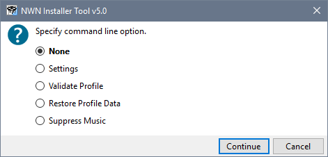

Command line options allow you to specify actions you want the Installer Tool to perform when it starts. These options are designed to help you overcome problems that prevent the Tool from starting normally. For example, a corrupted database causing the Installer Tool to crash every time you start it.
<path>\Surazal\NWN Installer Tool\NWN Installer Tool.exe -Command
All commands can be abbreviated to the first character and are case insensitive.
|
Command |
Start-up action |
|
-CommandMenu -C |
Displays a command line option menu.  You can also press the Ctrl+NWN Installer Tool from the Windows Start Menu or, when using the desktop shortcut, press the Ctrl key immediately after clicking the NWN Installer Tool desktop icon. |
|
-Settings -S |
Display the Advanced Settings dialogue. |
|
-ProfileValidate -P |
Validate Profile information after it has been loaded. |
|
-RestoreProfileData -R |
Display the Backup and Export Manager's list of Data Backups before loading Profile information so you can restore information from a backup copy. |
|
-MusicOff -M |
Do not play the Installer Tool's start-up sound. |
Command Line Options